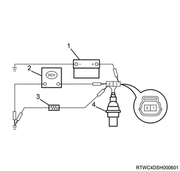
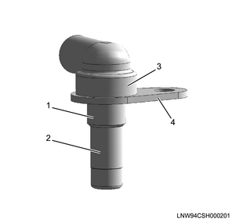

1. Inspect the wheel speed sensor.

- Battery, 12 V
- DMM
- Resistance
- Wheel speed sensor
Note
- Turn OFF the ignition switch
- Install the wheel speed sensor to the vehicle, and remove the harness connector.
- Connect a resistance of 100 Ω between the wheel speed sensor connector 1 pin and GND.
- Apply a voltage of 9 to 16 V to the wheel speed sensor connector 2 pin.
- Connect a DMM between the wheel speed sensor connector 1 pin and GND.
- Spin the tire at 1/2 rotation per second, and confirm that the voltage is within the range of standard values.
- Standard value: 0.5 - 2.0 V
Caution
- Replace the wheel speed sensor if the voltage is not within the range of standard values.
Note
- Inspect the sensor.
- Inspect whether any of the following failures exists in the appearance of the removed wheel speed sensor.
- Check for any damage on sensor's resin collar.
- Check for any deformation of the cylindrical part of the sensor.
- Check for any clearance between the sensor resin section and the sensor mounting flange.
- Check for any deformation of the flange such as bending.
Caution
- If a problem is found, replace the wheel speed sensor with a new one.

- Sensor's resin collar
- Cylindrical part of the sensor
- Sensor resin section
- Sensor mounting flange